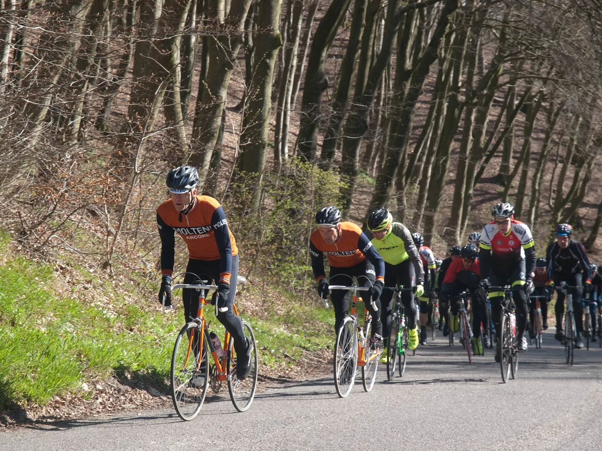
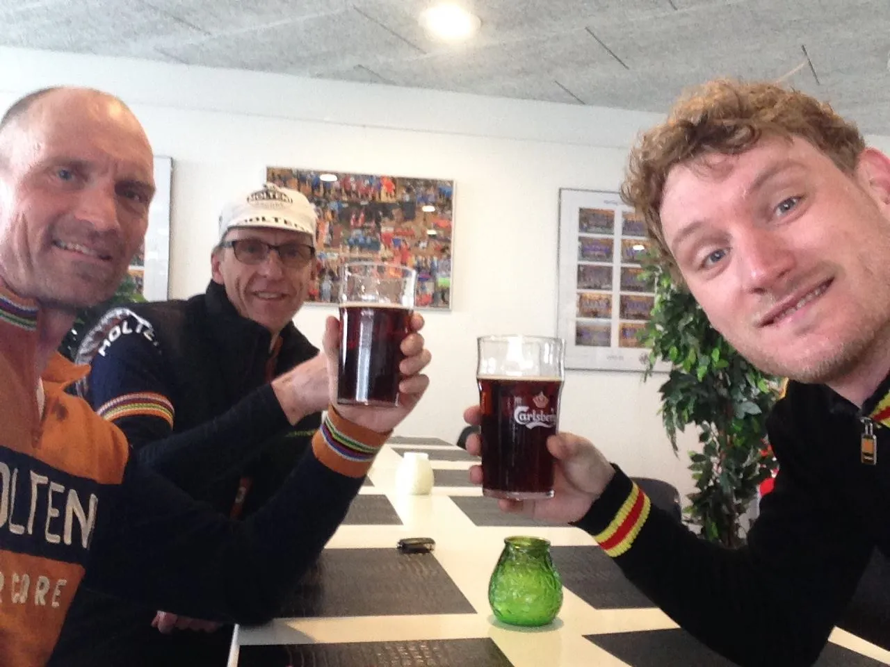

Forårsklassiker: Bakkeløbet i Hørning

Der var nervøsitet i luften før Bakkeløbet i Hørning. På startstregen stod 150 ryttere i strålende solskin, men vejrguderne havde lovet regn og slud senere på dagen. Regnjakke eller ikke regnjakke i baglommen? Vi tog den med.
For Squadra Molteni stod den på 120 kilometer i Skanderborgs bakkede terræn med en menu på 1250 højdemeter. Niels Bjørnsteen, Eigil Leegaard og Kasper Sørensen var udtaget – med Eigil som suverænt bedste kort til en topplacering. Kasper har levet den seneste uge udelukkende på urtete, for at blive ædru efter Ronde Van Borum.
Bakkeløbet startede som død og helvede
Et stort skilt ved start annoncerede den forventede gennemsnitsfart for de forskellige startgrupper. Squadra Molteni tog kampen op i gruppe 3, hvor der blev kørt med 33 km./t. Og det skulle vise sig at vi kom til at præge løbet helt i front af denne startgruppe.
Som sædvanlig gik starten som død og helvede, og de første accelerationer på bakkerne var nær ved at koste Kasper pladsen i frontgruppen – allerede efter 20 km. Så var elastikken ligesom afprøvet! Niels og Eigil kørte godt med på bakkerne, og Eigil havde overskud på det flade.
Som en tyrekalv der ikke kender sin egen styrke, måtte der et taktisk irettesættelse til for at holde ham i kort snor. Efter løbet var hans største irritation, som han sagde, at det var for svært at splitte gruppen alene – ingen ville køre med ham.

Eigil, Kasper og bakerne
Gruppen blev hurtigt splittet, og vi samlede tabte ryttere op fra de forankørende grupper. Kort før Yding Skovhøj (en Bakkeløbet-klassiker) – halvvejs på ruten – hentede vi en stor gruppe, de fleste kom med op over, og der var samling efter den lange nedkørsel.
Men det var med syre i benene, og da ruten slog et fiks lille u-sving, for at tage Ejer Bavnehøj, måtte Niels melde udsolgt. I flere kilometer havde Niels lagt og kørt elastik ind efter hver bakke, og til sidst blev det for meget. Med 40 kilometer igen, fortsatte han alene.
Eigil førte gruppen over bakkerne, og Kasper hold elastikken stram, men måtte i flere omgange køre den ind. På sidste bakke, Bjergvej, blev den sidste udskilning. De sidste 100 meter stiger med 19%. Eigil forcerede udskilningen og 8-10 stykker var samlet op over, Kasper sov i timen, og blev fanget i sidevinden på toppen. Med 20 kilometer igen var han sat – troede han! Men han fik en hjælpende hånd af en hård hund, der trak han tilbage til frontgruppen. Tak for det!
Snestorm!
I mellemtiden var Niels kørt fra en lille gruppe, og sad nu alene de sidste 20 kilometer. Himmelen var mørk, og regnen så småt begyndt at falde. Det var kun et spørgsmål om tid, før den ville åbne helt.
De sidste 20 kilometer var uden de store bakker og flere ryttere blev samlet op. 10 kilometer før mål begyndte regnen så småt at vende over i slud. De sidste 5 kilometer var i en modvind af en snestorm. Så ville man gerne hjem!
Der blev forsøgt at skrue lidt på tempoet ind mod mål, men ingen havde tilsyneladende kræfter eller lyst til at forsøge det helt store. En større gruppe kommer samlet til mål, men ifølge resultatlisten er der 8 fra vores startgruppe i mellem. Eigil og Kasper kører en fin top 10 hjem i vores startgruppe, og bliver 52 og 53 samlet med en sluttid på 3:34.
Niels holder helt utrolig godt gang i maskinen – solo -, og kommer ind under ti minutter efter på en mere end hæderlig 84. plads.
Cafeteria-øl

Bagefter var der mørke øl i cafeteriaet, og udvekslinger af oplevelser fra ruten, hvor der flere steder blev brug for 42/28 udvekslingen på de gamle Campagnolo komponenter.
Eigil beholder dermed den interne lyserøde førertrøje på Squadra Molteni. Trods den 10 kilo tunge jernhest viste han sig som gruppens stærkeste rytter på stigninger. Eigil skulle måske være startet i startgruppe 2, så godt kørende var han.
Med Ronde Van Borum og Bakkeløbet overstået, tager Squadra Molteni afsked med de bakkede ardenner-løb, for i næste uge gælder det Nordfyn Rundt i et helt andet terræn